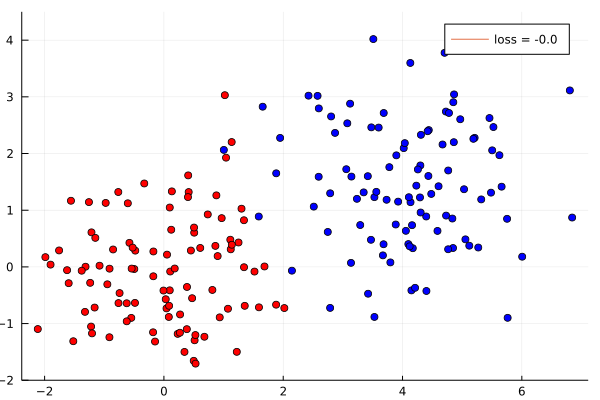
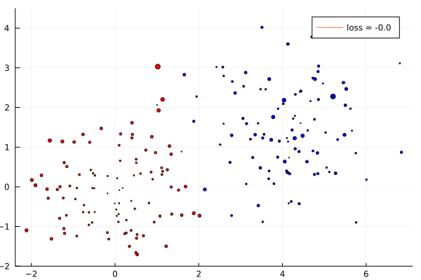

Sensitivity Analysis of SVM using DiffOpt.jl
This notebook illustrates sensitivity analysis of data points in an Support Vector Machine (inspired from @matbesancon's SimpleSVMs.)
For reference, Section 10.1 of https://online.stat.psu.edu/stat508/book/export/html/792 gives an intuitive explanation of what does it means to have a sensitive hyperplane or data point. The general form of the SVM training problem is given below (without regularization):
\[\begin{split} \begin{array} {ll} \mbox{minimize} & \sum_{i=1}^{N} \xi_{i} \\ \mbox{s.t.} & \xi_{i} \ge 0 \quad i=1..N \\ & y_{i} (w^T X_{i} + b) \ge 1 - \xi[i]\\ \end{array} \end{split}\]
where
X,yare theNdata pointsξis the soft-margin loss.
Define and solve the SVM
Import the libraries.
import Random
using Test
import SCS
import Plots
using DiffOpt
using LinearAlgebra
import MathOptInterface
const MOI = MathOptInterfaceConstruct separatable, non-trivial data points.
N = 100
D = 2
Random.seed!(6)
X = vcat(randn(N, D), randn(N,D) .+ [4.0,1.5]')
y = append!(ones(N), -ones(N))Let's define the variables.
model = diff_optimizer(SCS.Optimizer)
MOI.set(model, MOI.Silent(), true)
# add variables
l = MOI.add_variables(model, N)
w = MOI.add_variables(model, D)
b = MOI.add_variable(model)Add the constraints.
MOI.add_constraint(
model,
MOI.VectorAffineFunction(
MOI.VectorAffineTerm.(1:N, MOI.ScalarAffineTerm.(1.0, l)), zeros(N),
),
MOI.Nonnegatives(N),
)
# define the whole matrix Ax, it'll be easier then
# refer https://discourse.julialang.org/t/solve-minimization-problem-where-constraint-is-the-system-of-linear-inequation-with-mathoptinterface-efficiently/23571/4
Ax = Matrix{MOI.ScalarAffineTerm{Float64}}(undef, N, D+2)
for i in 1:N
Ax[i, :] = MOI.ScalarAffineTerm.([1.0; y[i]*X[i,:]; y[i]], [l[i]; w; b])
end
terms = MOI.VectorAffineTerm.(1:N, Ax)
f = MOI.VectorAffineFunction(
vec(terms),
-ones(N),
)
cons = MOI.add_constraint(
model,
f,
MOI.Nonnegatives(N),
)Define the linear objective function and solve the SVM model.
objective_function = MOI.ScalarAffineFunction(
MOI.ScalarAffineTerm.(ones(N), l),
0.0,
)
MOI.set(model, MOI.ObjectiveFunction{MOI.ScalarAffineFunction{Float64}}(), objective_function)
MOI.set(model, MOI.ObjectiveSense(), MOI.MIN_SENSE)
MOI.optimize!(model)
loss = MOI.get(model, MOI.ObjectiveValue())
wv = MOI.get(model, MOI.VariablePrimal(), w)
bv = MOI.get(model, MOI.VariablePrimal(), b)We can visualize the separating hyperplane.
# build SVM points
svm_x = [0.0, 3.0]
svm_y = (-bv .- wv[1] * svm_x )/wv[2]
p = Plots.scatter(X[:,1], X[:,2], color = [yi > 0 ? :red : :blue for yi in y], label = "")
Plots.yaxis!(p, (-2, 4.5))
Plots.plot!(p, svm_x, svm_y, label = "loss = $(round(loss, digits=2))", width=3)
Plots.savefig("svm_separating.svg")qt.qpa.xcb: could not connect to display qt.qpa.plugin: Could not load the Qt platform plugin "xcb" in "" even though it was found. This application failed to start because no Qt platform plugin could be initialized. Reinstalling the application may fix this problem. Available platform plugins are: linuxfb, minimal, offscreen, vnc, xcb. Aborted (core dumped) connect: Connection refused GKS: can't connect to GKS socket application GKS: Open failed in routine OPEN_WS GKS: GKS not in proper state. GKS must be either in the state WSOP or WSAC in routine ACTIVATE_WS

Experiments
Now that we've solved the SVM, we can compute the sensitivity of optimal values – the separating hyperplane in our case – with respect to perturbations of the problem data – the data points – using DiffOpt. For illustration, we've explored two questions:
- How does a change in labels of the data points (
y=1toy=-1, and vice versa) affect the position of the hyperplane? This is achieved by finding the gradient ofw,bwith respect toy[i], the classification label of the ith data point. - How does a change in coordinates of the data points,
X, affects the position of the hyperplane? This is achieved by finding gradient ofw,bwith respect toX[i], 2D coordinates of the data points.
Note that finding the optimal SVM can be modelled as a conic optimization problem:
\[\begin{align*} & \min_{x \in \mathbb{R}^n} & c^T x \\ & \text{s.t.} & A x + s = b \\ & & b \in \mathbb{R}^m \\ & & s \in \mathcal{K} \end{align*}\]
where
\[\begin{align*} c &= [l_1 - 1, l_2 -1, ... l_N -1, 0, 0, ... 0 \text{(D+1 times)}] \\\\ A &= \begin{bmatrix} -l_1 & 0 & ... & 0 & 0 & ... & 0 & 0 \\ 0 & -l_2 & ... & 0 & 0 & ... & 0 & 0 \\ : & : & ... & : & 0 & ... & 0 & 0 \\ 0 & 0 & ... & -l_N & 0 & ... & 0 & 0 \\ 0 & 0 & ... & 0 & -y_1 X_{1,1} & ... & -y_1 X_{1,N} & -y_1 \\ 0 & 0 & ... & 0 & -y_2 X_{2,1} & ... & -y_1 X_{2,N} & -y_2 \\ : & : & ... & : & : & ... & : & : \\ 0 & 0 & ... & 0 & -y_N X_{N,1} & ... & -y_N X_{N,N} & -y_N \\ \end{bmatrix} \\\\ b &= [0, 0, ... 0 \text{(N times)}, l_1 - 1, l_2 -1, ... l_N -1] \\\\ \mathcal{K} &= \text{Set of Nonnegative cones} \end{align*}\]
Experiment 1: Gradient of hyperplane wrt the data point labels
Construct perturbations in data point labels y without changing the data point coordinates X.
∇ = Float64[]
dy = zeros(N)
# begin differentiating
for Xi in 1:N
dy[Xi] = 1.0 # set
MOI.set(
model,
DiffOpt.ForwardInConstraint(),
cons,
MOI.Utilities.vectorize(dy .* MOI.SingleVariable(b)),
)
DiffOpt.forward(model)
dw = MOI.get.(
model,
DiffOpt.ForwardOutVariablePrimal(),
w
)
db = MOI.get(
model,
DiffOpt.ForwardOutVariablePrimal(),
b
)
push!(∇, norm(dw) + norm(db))
dy[Xi] = 0.0 # reset the change made above
end
LinearAlgebra.normalize!(∇)Visualize point sensitivities with respect to separating hyperplane. Note that the gradients are normalized.
p2 = Plots.scatter(
X[:,1], X[:,2],
color = [yi > 0 ? :red : :blue for yi in y], label = "",
markersize = ∇ * 20,
)
Plots.yaxis!(p2, (-2, 4.5))
Plots.plot!(p2, svm_x, svm_y, label = "loss = $(round(loss, digits=2))", width=3)
Plots.savefig("sensitivity2.svg")qt.qpa.xcb: could not connect to display qt.qpa.plugin: Could not load the Qt platform plugin "xcb" in "" even though it was found. This application failed to start because no Qt platform plugin could be initialized. Reinstalling the application may fix this problem. Available platform plugins are: linuxfb, minimal, offscreen, vnc, xcb. Aborted (core dumped) connect: Connection refused GKS: can't connect to GKS socket application GKS: Open failed in routine OPEN_WS GKS: GKS not in proper state. GKS must be either in the state WSOP or WSAC in routine ACTIVATE_WS ┌ Warning: Indices Base.OneTo(100) of attribute `markersize` does not match data indices 1:200. └ @ Plots ~/.julia/packages/Plots/YVapH/src/utils.jl:108 ┌ Warning: Indices Base.OneTo(100) of attribute `markersize` does not match data indices 1:200. └ @ Plots ~/.julia/packages/Plots/YVapH/src/utils.jl:108

Experiment 2: Gradient of hyperplane wrt the data point coordinates
Similar to previous example, construct perturbations in data points coordinates X.
∇ = Float64[]
dX = zeros(N, D)
# begin differentiating
for Xi in 1:N
dX[Xi, :] = ones(D) # set
for i in 1:D
MOI.set(
model,
DiffOpt.ForwardInConstraint(),
cons,
MOI.Utilities.vectorize(dX[:,i] .* w[i]),
)
end
DiffOpt.forward(model)
dw = MOI.get.(
model,
DiffOpt.ForwardOutVariablePrimal(),
w
)
db = MOI.get(
model,
DiffOpt.ForwardOutVariablePrimal(),
b
)
push!(∇, norm(dw) + norm(db))
dX[Xi, :] = zeros(D) # reset the change made ago
end
LinearAlgebra.normalize!(∇)We can visualize point sensitivity with respect to the separating hyperplane. Note that the gradients are normalized.
p3 = Plots.scatter(
X[:,1], X[:,2],
color = [yi > 0 ? :red : :blue for yi in y], label = "",
markersize = ∇ * 20,
)
Plots.yaxis!(p3, (-2, 4.5))
Plots.plot!(p3, svm_x, svm_y, label = "loss = $(round(loss, digits=2))", width=3)
Plots.savefig(p3, "sensitivity3.svg")qt.qpa.xcb: could not connect to display qt.qpa.plugin: Could not load the Qt platform plugin "xcb" in "" even though it was found. This application failed to start because no Qt platform plugin could be initialized. Reinstalling the application may fix this problem. Available platform plugins are: linuxfb, minimal, offscreen, vnc, xcb. Aborted (core dumped) connect: Connection refused GKS: can't connect to GKS socket application GKS: Open failed in routine OPEN_WS GKS: GKS not in proper state. GKS must be either in the state WSOP or WSAC in routine ACTIVATE_WS ┌ Warning: Indices Base.OneTo(100) of attribute `markersize` does not match data indices 1:200. └ @ Plots ~/.julia/packages/Plots/YVapH/src/utils.jl:108 ┌ Warning: Indices Base.OneTo(100) of attribute `markersize` does not match data indices 1:200. └ @ Plots ~/.julia/packages/Plots/YVapH/src/utils.jl:108